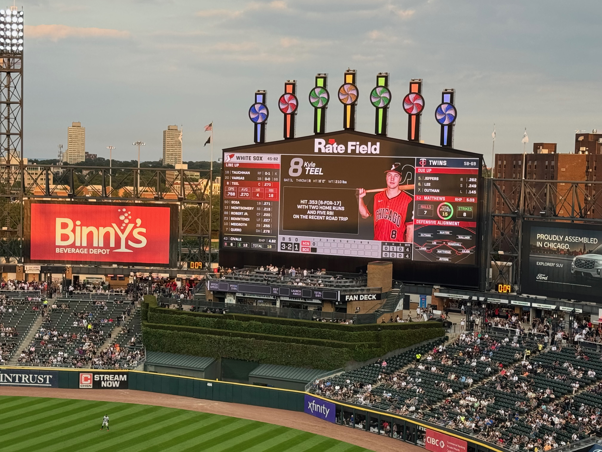

My Blog
My Blog
I write to think. There is something about putting a half-formed idea into sentences that forces me to notice where the idea is actually hollow.
Writing as a filter
When a thought stays in my head, it feels complete. The moment I try to write it down, the gaps show up. Writing is how I separate the ideas that survive contact with a keyboard from the ones that only sounded good at 2 a.m.
Owning the words
A blog I own is different from a post on someone else’s platform. There is no engagement metric here, no algorithmic timeline deciding who sees this. That freedom changes what I’m willing to say.
The best reason to write on your own site is that nobody can take it away from you.
If you’re considering starting a blog, my advice is simply: start. Write the first post badly, publish it, and fix it later.